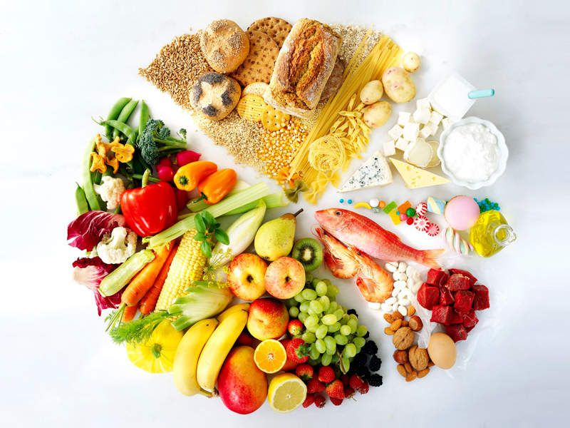
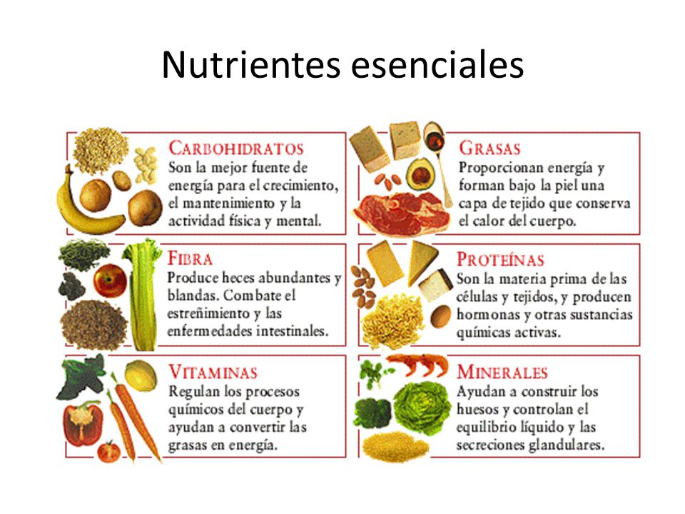
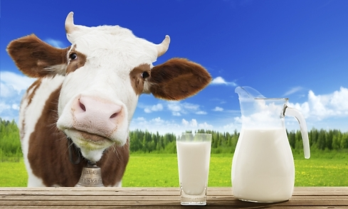
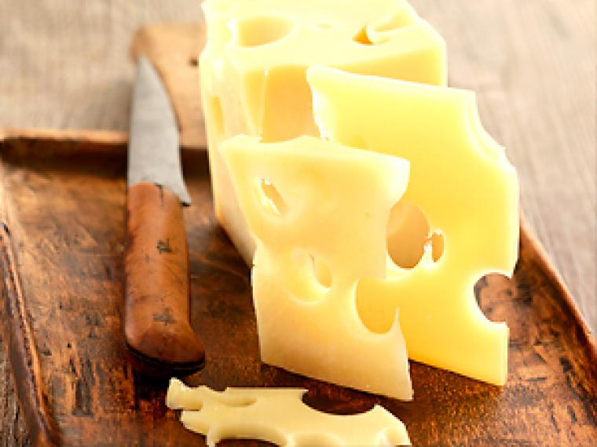

¿Que es?
La nutrición es la ingesta de alimentos en relación con las necesidades dietéticas del organismo. Una buena nutrición (una dieta suficiente y equilibrada combinada con el ejercicio físico regular) es un elemento fundamental de la buena salud. Una mala nutrición puede reducir la inmunidad, aumentar la vulnerabilidad a las enfermedades, alterar el desarrollo físico y mental, y reducir la productividad.
nuticion saludable
La nutrición es salud, ya que al lograr una buena alimentación y una dieta saludable conseguirás una vida más sana y sin sobresaltos. Una buena nutrición depende fundamentalmente de que los hábitos alimenticios sean los adecuados en cada caso particular. Además, es importante que tomes mucho agua a diario, apartando las gaseosas y el alcohol para ocasiones esporádicas, tal como indican los buenos cursos de nutrición. Los hábitos alimenticios no sólo tienen que ver con el tipo de alimentos que ingerimos, sino también con las conductas y costumbres. Por eso, para empezar una vida sana debes modificar tus hábitos alimenticio. 
nutrientes ecenciales
Ciertos nutrientes, como el hierro y el calcio, por ejemplo, se encuentran muy repartidos en alimentos como legumbres y verduras; sin embargo el organismo no los aprovecha tan óptimamente como cuando proceden de la carne y derivados y de la leche, respectivamente. Básicamente, los alimentos se agrupan en los siguientes grupos: energéticos, que incluyen los hidratos de carbono (CHO) y las grasas; plásticos (proteínas), que intervienen como constructores; y reguladores (vitaminas y minerales).
mitos de nuticion
la carne
a lo largo de los años se acreado el mito que la carne es una de las unicas fuentes de proteinas cuando en verdad no es hasi podemos encontar proteinas en vegetales verdes o tambieen las lentejas grabanzos judias rofu y cetas tambien algunos frutos secos como la almendra.

la leche
desde pequeños estamos rodiados de propagandas que si tomamos leche tenfremos unos huesos fueres cuando do en verdad la leche no es tan necesaria en nuestro sistema ya que somos unos de los seres vivos que menos necesitann leche ya que la leche que necesitamos la abquirimos en la latancia.
el queso
el queso como sabemos es un derivado de la leche pero lo que no sabemos es que el queso es adictivo ya que contiene una poca cantidad de heroina la cual aunque sea una pequeña cantidad hace que las personas quieran consumirlo mas.
